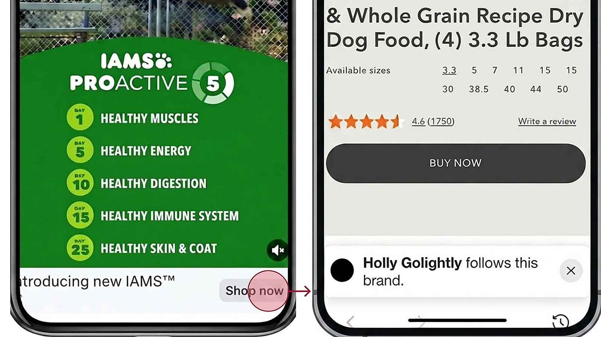

Optimizing content-to-code with AI
I designed and piloted a human-in-the-loop workflow that cut string implementation time 91% with zero post-launch corrections. See the workflow
CONTENT DESIGN · CONTENT STRATEGY · AI SYSTEMS · UX WRITING
Working at the intersection of language, products, and people, I create the content, frameworks, flows, and decision points that turn complex systems into clear paths forward—helping people and teams understand what matters, why it matters, and what to do next.
Confusion is expensive.
For people. For products. For teams. For businesses.
Selected work across AI workflows, product strategy, accessibility, content design, and experimentation.
Optimizing content-to-code with AI
I designed and piloted a human-in-the-loop workflow that cut string implementation time 91% with zero post-launch corrections. See the workflow

Turning the Autofill ecosystem into a shared strategy
I synthesized research, performance data, and competitive analysis into a shared framework that identified five strategic opportunities and became the team’s source of truth for product prioritization. See the content strategy

Closing a critical gap in the shopping journey
I defined the design principles, naming, value proposition, and first-use experience for a 0→1 Tabs product that launched in Facebook’s in-app browser and beat its engagement goal by 46%. See the product strategy

Turning accessibility risk into an operating model
I identified and prioritized critical browser flows, partnered with Design and Engineering to make them testable, and expanded the approach into an organization-wide model for accessibility remediation. See the operating model

Prioritizing user needs in Autofill consent
I reframed value, trust, control, and security around user needs, reducing the full disclosure 46% and creating a reusable baseline that preserved legal and privacy requirements. See the content design

Shaping browser evolution through experimentation
I drove content strategy across dozens of post-click experiments, using mixed results to identify durable value and help shape a unified agentic browser concept now in development. See the content experiments
Clear experiences and strategic direction grounded in what people need to understand, decide, and do.
Reusable language, standards, and human-centered workflows that keep complex and AI-enabled products coherent at scale.
Shared frameworks, governance, and cross-functional alignment that turn ambiguity into decisions teams can act on.
About
The more complicated the experience, the more intentional its language and structure need to be.
I uncover the context behind complex experiences and information, connect teams around a shared understanding, and design clearer paths to better outcomes.